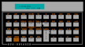

Dave's Personal Logbook
Why this webpage ?
The objective is multiple:
- to track all my little discovers and tricks found around the web or books on how to let my Linux-based system (or systems) properly working
- to share those discovers, so maybe someone else could take advantage
- to share my little projects related to Linux, DOS, Calculators and whatever will come
- to share valuable, for me, resource on the web
I will provide the sources and references as soon as those are known to me as well. For my part, there is absolutely no intention of appropriating other people's work.
My intention is to grown the webpage with a minimalistic approach using HTML 2.0, so it can be accessed not only by modern browsers but also from text-bases browser from DOS systems.
Here below the Linux systems I'm dealing with ...
"MacBook Pro with Linux - my daily driver"
Here below the a small projects I've worked on, related both to DOS and RPN calculator ...

"RPNV Calculator for DOS"
Still under construction ... 
Whatever is reported in this webpage is shared under "The Unlicense" license
Last update: April 11th, 2026